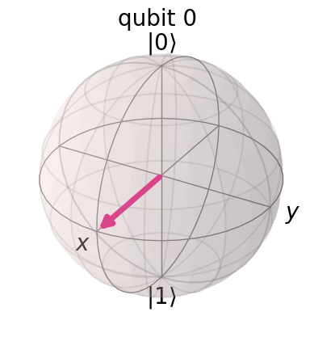
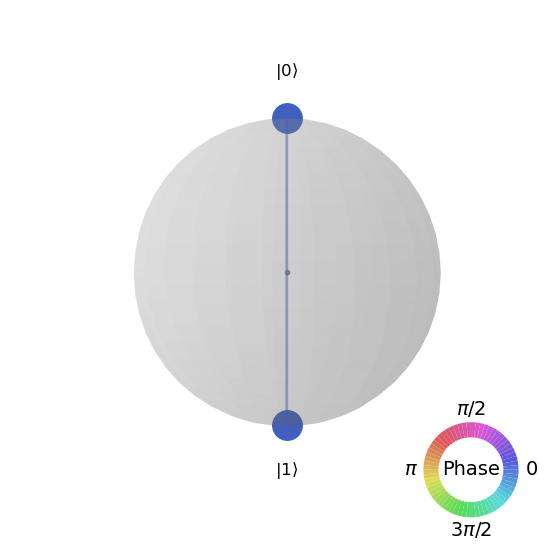
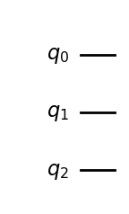
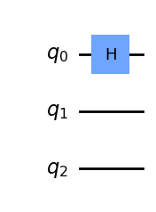
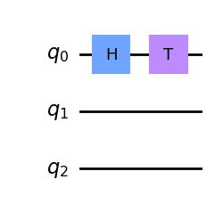
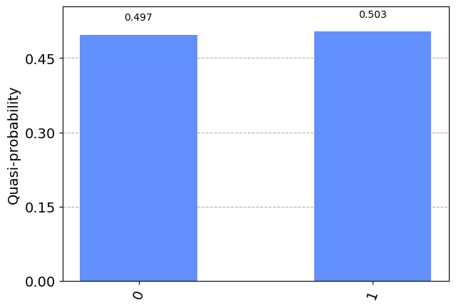

Qiskit: Single Systems#
Last updated on 10/04/2023
Ref: https://learning.quantum-computing.ibm.com/course/basics-of-quantum-information/single-systems
import numpy as np
Numpy array#
ket0 = np.array([1, 0])
ket1 = np.array([0, 1])
display(ket0)
display(ket1)
print(ket0)
print(ket1)
array([1, 0])
array([0, 1])
[1 0]
[0 1]
ket0/2 + ket1/2
array([0.5, 0.5])
M1 = np.array([[1, 1],
[0, 0]])
M2 = np.array([[1, 1],
[1, 0]])
M1/2 + M2/2
array([[1. , 1. ],
[0.5, 0. ]])
M1[0,0]
np.int64(1)
M1 @ M2
array([[2, 1],
[0, 0]])
M2 @ ket0
array([1, 1])
Qiskit statevector#
https://docs.quantum-computing.ibm.com/api/qiskit/qiskit.quantum_info.Statevector
from qiskit.quantum_info import Statevector
---------------------------------------------------------------------------
ModuleNotFoundError Traceback (most recent call last)
Cell In[9], line 1
----> 1 from qiskit.quantum_info import Statevector
ModuleNotFoundError: No module named 'qiskit'
Create a statevector#
u = Statevector([1/np.sqrt(2), 1/np.sqrt(2)])
v = Statevector([(1 + 2.0j)/3, -2/3])
w = Statevector([1/3, 2/3])
print(u)
Statevector([0.70710678+0.j, 0.70710678+0.j],
dims=(2,))
Diaply a statevector#
u
Statevector([0.70710678+0.j, 0.70710678+0.j],
dims=(2,))
u.draw()
'Statevector([0.70710678+0.j, 0.70710678+0.j],\n dims=(2,))'
u.draw("latex")
\[\frac{\sqrt{2}}{2} |0\rangle+\frac{\sqrt{2}}{2} |1\rangle\]
u.draw("bloch")

u.draw("qsphere")

Inner product#
self.inner(other)=\(\langle self|other\rangle\).
u = Statevector([1/np.sqrt(2), 1/np.sqrt(2)])
v = Statevector([(1 + 2.0j)/3, -2/3])
w = Statevector([1/3, 2/3])
u.inner(u)
(0.9999999999999998+0j)
display(u.inner(v))
display(v.inner(u))
(-0.2357022603955158+0.4714045207910316j)
(-0.2357022603955158-0.4714045207910316j)
Check a statevector#
A valid state vector should have its Euclidean norm equal to 1.
u.is_valid()
True
uu = u/2
uu.is_valid()
False
w.is_valid()
False
Measurement of a statevector#
ket.measure()ket.sample_count()The quantum state is projected onto the standard basis.
The original quantum state is NOT distroyed.
display(v.draw("latex"))
\[(\frac{1}{3} + \frac{2 i}{3}) |0\rangle- \frac{2}{3} |1\rangle\]
v = Statevector([(1 + 2.0j) / 3, -2 / 3])
v0 = Statevector([(1 + 2.0j) / 3, 0])
v0 = v0/np.sqrt(v0.inner(v0))
v1 = Statevector([0, -2 / 3])
v1 = v1/np.sqrt(v1.inner(v1))
display(v.draw("latex"))
print(v)
display(v0.draw("latex"))
print(v0)
display(v1.draw("latex"))
print(v1)
\[(\frac{1}{3} + \frac{2 i}{3}) |0\rangle- \frac{2}{3} |1\rangle\]
Statevector([ 0.33333333+0.66666667j, -0.66666667+0.j ],
dims=(2,))
\[(\frac{\sqrt{5}}{5} + \frac{2 \sqrt{5} i}{5}) |0\rangle\]
Statevector([0.4472136+0.89442719j, 0. +0.j ],
dims=(2,))
\[- |1\rangle\]
Statevector([ 0.+0.j, -1.+0.j],
dims=(2,))
v.measure()
('0',
Statevector([0.4472136+0.89442719j, 0. +0.j ],
dims=(2,)))
v.draw("latex")
\[(\frac{1}{3} + \frac{2 i}{3}) |0\rangle- \frac{2}{3} |1\rangle\]
for _ in range(20):
out, state = v.measure()
print(out, state)
0 Statevector([0.4472136+0.89442719j, 0. +0.j ],
dims=(2,))
0 Statevector([0.4472136+0.89442719j, 0. +0.j ],
dims=(2,))
0 Statevector([0.4472136+0.89442719j, 0. +0.j ],
dims=(2,))
0 Statevector([0.4472136+0.89442719j, 0. +0.j ],
dims=(2,))
0 Statevector([0.4472136+0.89442719j, 0. +0.j ],
dims=(2,))
0 Statevector([0.4472136+0.89442719j, 0. +0.j ],
dims=(2,))
1 Statevector([ 0.+0.j, -1.+0.j],
dims=(2,))
0 Statevector([0.4472136+0.89442719j, 0. +0.j ],
dims=(2,))
0 Statevector([0.4472136+0.89442719j, 0. +0.j ],
dims=(2,))
0 Statevector([0.4472136+0.89442719j, 0. +0.j ],
dims=(2,))
0 Statevector([0.4472136+0.89442719j, 0. +0.j ],
dims=(2,))
1 Statevector([ 0.+0.j, -1.+0.j],
dims=(2,))
1 Statevector([ 0.+0.j, -1.+0.j],
dims=(2,))
1 Statevector([ 0.+0.j, -1.+0.j],
dims=(2,))
0 Statevector([0.4472136+0.89442719j, 0. +0.j ],
dims=(2,))
0 Statevector([0.4472136+0.89442719j, 0. +0.j ],
dims=(2,))
0 Statevector([0.4472136+0.89442719j, 0. +0.j ],
dims=(2,))
1 Statevector([ 0.+0.j, -1.+0.j],
dims=(2,))
0 Statevector([0.4472136+0.89442719j, 0. +0.j ],
dims=(2,))
1 Statevector([ 0.+0.j, -1.+0.j],
dims=(2,))
Plot distribution#
‘qiskit.visualization.plot_histogram’ is dprecated.
from qiskit.visualization import plot_distribution
statistics = v.sample_counts(9000)
statistics
{'0': 4962, '1': 4038}
statistics = v.sample_counts(900000)
display(statistics)
plot_distribution(statistics)
{'0': 501086, '1': 398914}

5/9
0.5555555555555556
Qiskit operator#
O|v> = v.evolve(O)
from qiskit.quantum_info import Operator
X = Operator([[0, 1], [1, 0]])
v = Statevector([1, 0])
display(v.draw("latex"))
display(v.evolve(X).draw("latex"))
display(v.draw("latex"))
\[ |0\rangle\]
\[ |1\rangle\]
\[ |0\rangle\]
X = Operator([[0, 1], [1, 0]])
display(X)
v = Statevector([1, 0])
display(v.draw("latex"))
v = v.evolve(X)
display(v.draw("latex"))
v = v.evolve(X)
display(v.draw("latex"))
Operator([[0.+0.j, 1.+0.j],
[1.+0.j, 0.+0.j]],
input_dims=(2,), output_dims=(2,))
\[ |0\rangle\]
\[ |1\rangle\]
\[ |0\rangle\]
X
Operator([[0.+0.j, 1.+0.j],
[1.+0.j, 0.+0.j]],
input_dims=(2,), output_dims=(2,))
Qiskit quantum circuit#
from qiskit import QuantumCircuit
Single qubit quantum circuit#
circuit = QuantumCircuit(1)
display(circuit.draw())
q:
circuit = QuantumCircuit(3)
display(circuit.draw())
q_0:
q_1:
q_2:
display(circuit.draw('mpl'))

circuit.h(0)
display(circuit.draw())
┌───┐
q_0: ┤ H ├
└───┘
q_1: ─────
q_2: ─────
display(circuit.draw('mpl'))

circuit.t(0)
display(circuit.draw())
┌───┐┌───┐
q_0: ┤ H ├┤ T ├
└───┘└───┘
q_1: ──────────
q_2: ──────────
display(circuit.draw('mpl'))

ket0 = Statevector([1, 0])
v = ket0.evolve(circuit)
v.draw("text")
[0.70710678+0.j ,0.5 +0.5j]
statistics = v.sample_counts(4000)
plot_distribution(statistics)
